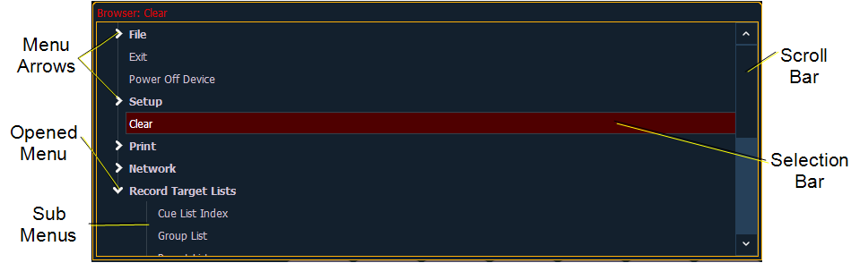

Using the Browser
To use the browser, you must first draw focus to it by touching anywhere in the browser area of the CIA. If the browser is not visible, pressing [Displays]>{Browser} will bring up the browser.
When focus is on the browser, the window border highlights in gold. The paging keys will now control selection in the browser.

- Use the page arrow keys to move the selection bar up and down the list. You may also use the level wheel to scroll through the list.
- When the bar highlights the desired menu, press [Page u] to open the menu.
- Continue pressing [Page u] to open submenus.
- Scroll to the item you wish to open using [Page p]or [Page q] and then press [Select] or double click on it. You may also touch the item you wish to open and then press [Select] or double tap.
- If you wish to close a submenu scroll to that item and press [Page t].
- Additional presses of [Displays] will minimize or restore the CIA.
- To draw focus to the browser at any time, press any area within it or press the [Displays] button.
Note: File folders display with a folder icon beside their name.
Note: Previous versions of a showfile will be displayed in dark gray text. To see previous versions of a showfile, you must click on the arrow to the left of the showfile name or use [Page u] .
Note: The [Select] key can be used to confirm a choice in the browser.
Browser Color Coding
The following color coding for selected items is used in the browser:
- Save - green
- Save As - green
- Open - red
- Merge - yellow
- New -red
- Clear -red